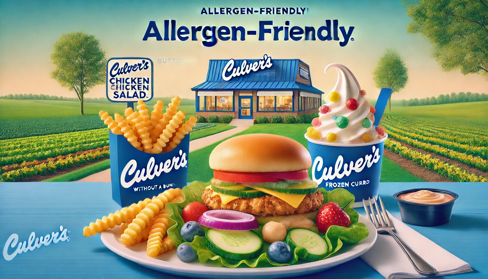

When it comes to satisfying your cravings while keeping dietary restrictions in mind, Culver’s has got you covered. Known for its ButterBurgers, fresh frozen custard, and hearty sandwiches, Culver’s is a favorite among food lovers. But what truly sets Culver’s apart is its commitment to transparency and inclusivity, especially with its allergen menu. Whether you’re avoiding gluten, dairy, nuts, or other allergens, Culver’s makes it easy to enjoy a meal without worry. In this article, we’ll dive into the highlights of Culver’s allergen menu, explore their delicious offerings, and help you find the best choices for your appetite and dietary needs.
Culver’s allergen menu is a game-changer for anyone with food sensitivities or allergies. The restaurant goes above and beyond to provide detailed information about allergens in their dishes, making it simple for customers to make informed decisions. Here’s why Culver’s allergen menu is worth celebrating:
Culver’s doesn’t just list their menu items—they break down each dish to show exactly what’s in it. From calories to ingredients and allergens, you’ll find all the information you need right at your fingertips. This level of transparency is a breath of fresh air for anyone navigating dietary restrictions.
Whether you’re in the mood for a juicy ButterBurger, a crispy chicken sandwich, or a refreshing salad, Culver’s has something for everyone. Their allergen menu ensures that you don’t have to miss out on your favorites just because of dietary limitations.
Culver’s allergen menu is user-friendly and straightforward. You don’t need a degree in nutrition to understand it! The clear labeling and detailed breakdowns make it easy to find dishes that fit your dietary needs.
Culver’s takes food safety seriously. Their staff is trained to handle allergen-related requests, ensuring that your meal is prepared with care. While cross-contamination is always a possibility in any restaurant, Culver’s makes every effort to minimize risks.
Let’s take a closer look at some of the standout items on Culver’s allergen menu. Whether you’re avoiding gluten, dairy, or nuts, there’s plenty to enjoy.
Culver’s ButterBurgers are legendary, and the good news is that they can still be part of your meal plan, even with dietary restrictions. The classic ButterBurger (without the bun) is a great option for those avoiding gluten. Pair it with a side of fries or a salad, and you’ve got a satisfying meal that’s both delicious and safe.
Pro Tip: If you’re avoiding dairy, skip the buttered bun and cheese, and customize your burger with fresh toppings like lettuce, tomato, and pickles.
Culver’s crispy chicken sandwiches are a fan favorite, and they’re surprisingly accommodating for those with dietary needs. The grilled chicken sandwich (without the bun) is a fantastic gluten-free option. It’s packed with flavor and pairs perfectly with a side of steamed vegetables or coleslaw.
Fun Fact: Did you know that Culver’s uses 100% all-natural chicken? It’s raised without antibiotics or hormones, so you can feel good about what you’re eating.
If you’re looking for a lighter option, Culver’s salads are a great choice. The Garden Fresco Salad (without cheese or croutons) is a refreshing and allergen-friendly option. Loaded with fresh veggies and topped with grilled chicken, it’s a meal that’s both nutritious and delicious.
Bonus: Culver’s offers a variety of dressings, so you can customize your salad to suit your taste and dietary needs.
No meal is complete without sides, and Culver’s has plenty of options to choose from. Their natural-cut fries are a crowd-pleaser and happen to be gluten-free. For a healthier alternative, try the steamed broccoli or side salad.
Did You Know? Culver’s coleslaw is dairy-free, making it a great choice for those avoiding dairy.
Yes, you read that right—Culver’s famous frozen custard can still be part of your dessert plans! While the classic custard contains dairy, Culver’s offers a variety of toppings and mix-ins that can be customized to suit your needs. Opt for fresh fruit or nuts (if you’re not allergic) to create a dessert that’s both safe and satisfying.
Pro Tip: Check with your local Culver’s for seasonal flavors and allergen information.
To make the most of your Culver’s dining experience, here are a few tips to keep in mind:
Culver’s allergen menu isn’t just for those with food allergies—it’s for anyone who values transparency and wants to make informed choices about what they eat. Whether you’re avoiding certain ingredients or simply curious about what’s in your food, Culver’s makes it easy to dine with confidence.
Culver’s allergen menu is a testament to the restaurant’s commitment to inclusivity and customer satisfaction. By providing detailed allergen information and offering a wide variety of customizable options, Culver’s ensures that everyone can enjoy a tasty meal, no matter their dietary needs.
So the next time you’re craving a ButterBurger or a scoop of frozen custard, don’t hesitate to visit Culver’s. With their allergen-friendly menu and dedication to quality, you’re in for a treat that’s both safe and satisfying.